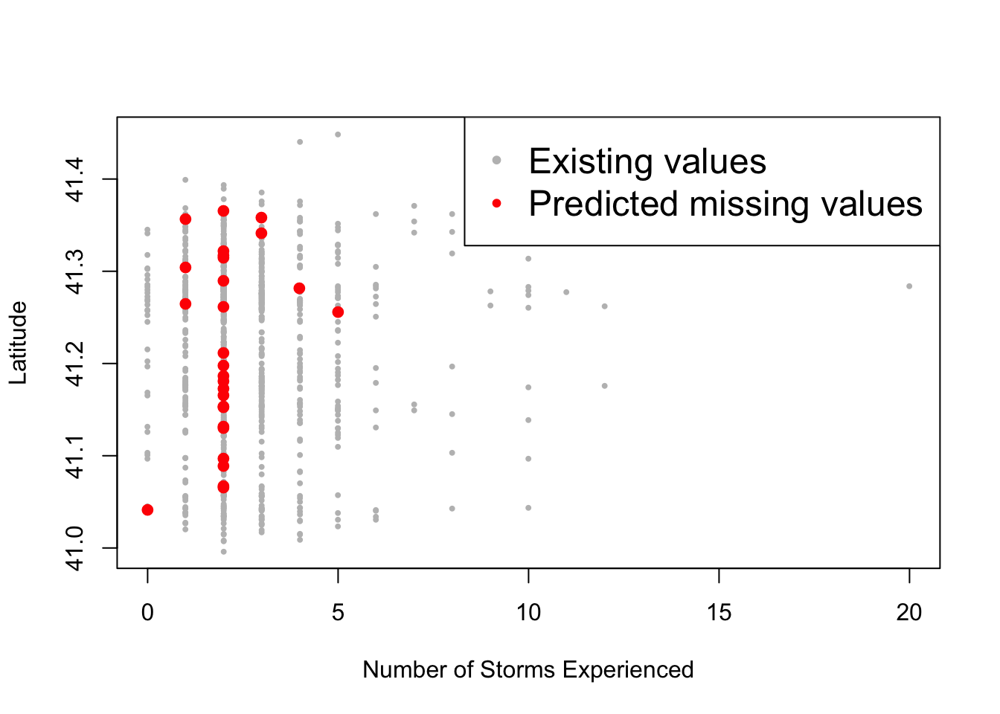

Wrangling data
1 Structuring data
Data structuring is the process of correcting or removing inaccurate records of a “raw data” so that, after the treatment, the transformed data will be easy to analyze and/or consistent with an existing dataset. More explicitly, the variable names, types, and values will be consistent and uniform.
1.1 Exploring the data
In order to structure a dataset, first, we need to be able to detect the anomalies within the data. Types of anomalies include the values that are stored in the wrong format (ex: a number stored as a string), the values that fall outside of the expected range (ex: outliers), values with inconsistent patterns (ex: dates stored as mm/dd/year vs dd/mm/year), trailing spaces in strings (ex: “data” vs “data”), etc.
One method of detecting these anomalies is the summary statistics of the variables, which can be obtained by using summary(). Here is an example using the hurricane data:
# Summary for a numerical variables
summary(data$Q4)## Min. 1st Qu. Median Mean 3rd Qu. Max. NA's
## 0.000 2.000 2.000 2.537 3.000 20.000 134# Summary for a categorical variable
summary(factor(data$Q1))## Warning: Unknown or uninitialised column: 'Q1'.## integer(0)Other ways of exploring the data include:
# First 10 rows
head(data, 10)## # A tibble: 10 x 9
## Zone Q4 Q5 Q6 Q7 Q10 Q50 Q51 Q59
## <chr> <dbl> <dbl+lbl> <dbl> <dbl+lbl> <dbl+lbl> <dbl> <dbl+lbl> <dbl+lbl>
## 1 A 2 3 0 3 [Moderately Prepared] 2 [No] 1928 1 [Male] 4 [$70,000-$99,999]
## 2 A 1 4 0 3 [Moderately Prepared] 2 [No] 1962 1 [Male] NA
## 3 A 3 4 0 3 [Moderately Prepared] 2 [No] 1931 2 [Female] 6 [Over $200,000]
## 4 A 3 6 1 1 [Fully Prepared] 2 [No] 1950 1 [Male] 5 [$100,000-$199,999]
## 5 A 2 1 [Not Worried At All] 0 2 [Very Prepared] 2 [No] 1948 1 [Male] 5 [$100,000-$199,999]
## 6 A 5 4 0 2 [Very Prepared] 2 [No] 1938 2 [Female] NA
## 7 A 3 6 1 3 [Moderately Prepared] 2 [No] 1977 2 [Female] NA
## 8 A 5 4 0 3 [Moderately Prepared] 2 [No] 1964 2 [Female] NA
## 9 A 1 3 0 3 [Moderately Prepared] 2 [No] 1976 1 [Male] 3 [$40,000-$69,999]
## 10 A 2 6 0 2 [Very Prepared] 2 [No] 1964 2 [Female] 6 [Over $200,000]# Last 10 rows
tail(data, 10)## # A tibble: 10 x 9
## Zone Q4 Q5 Q6 Q7 Q10 Q50 Q51 Q59
## <chr> <dbl> <dbl+lbl> <dbl> <dbl+lbl> <dbl+lbl> <dbl> <dbl+lbl> <dbl+lbl>
## 1 B 1 2 0 4 [A Little Prepared] 2 [No] 1980 1 [Male] 3 [$40,000-$69,999]
## 2 B 2 2 0 3 [Moderately Prepared] 2 [No] 1977 2 [Female] 4 [$70,000-$99,999]
## 3 B 4 4 1 2 [Very Prepared] 1 [Yes] 1962 2 [Female] 2 [$15,000-$39,999]
## 4 B 2 5 0 1 [Fully Prepared] 2 [No] 1946 1 [Male] 5 [$100,000-$199,999]
## 5 B NA 4 NA 1 [Fully Prepared] 1 [Yes] 1957 2 [Female] 1 [Less than $15,000]
## 6 B 1 4 1 4 [A Little Prepared] 1 [Yes] 1987 2 [Female] 6 [Over $200,000]
## 7 B 2 5 0 3 [Moderately Prepared] 2 [No] 1953 1 [Male] 4 [$70,000-$99,999]
## 8 B NA 4 4 2 [Very Prepared] 2 [No] 1973 2 [Female] 1 [Less than $15,000]
## 9 B 2 5 0 3 [Moderately Prepared] 2 [No] 1980 1 [Male] 5 [$100,000-$199,999]
## 10 B 2 2 0 4 [A Little Prepared] 2 [No] NA 2 [Female] 3 [$40,000-$69,999]# Total number of rows
nrow(data)## [1] 1130# Total number of columns
ncol(data)## [1] 9# Column names
names(data) # also colnames(data)## [1] "Zone" "Q4" "Q5" "Q6" "Q7" "Q10" "Q50" "Q51" "Q59"We can also plot the data to visualize the variables
# Plotting the first 5 columns
plot(data[,1:5])
While these plots could help in understanding the dataset, they could be misleading if the variables are not set their correct data type.
1.2 Data types
One type of anomaly that we may encounter is the coercion of irrelevant data types on a variables. This is very common for coded variables or variables that has levels.
For example, if we read in the same SPSS data from the Reading data section, we get the coded values instead of the labels.
## # A tibble: 6 x 9
## Zone Q4 Q5 Q6 Q7 Q10 Q50 Q51 Q59
## <chr> <dbl> <dbl+lbl> <dbl> <dbl+lbl> <dbl+lbl> <dbl> <dbl+lbl> <dbl+lbl>
## 1 A 2 3 0 3 [Moderately Prepared] 2 [No] 1928 1 [Male] 4 [$70,000-$99,999]
## 2 A 1 4 0 3 [Moderately Prepared] 2 [No] 1962 1 [Male] NA
## 3 A 3 4 0 3 [Moderately Prepared] 2 [No] 1931 2 [Female] 6 [Over $200,000]
## 4 A 3 6 1 1 [Fully Prepared] 2 [No] 1950 1 [Male] 5 [$100,000-$199,999]
## 5 A 2 1 [Not Worried At All] 0 2 [Very Prepared] 2 [No] 1948 1 [Male] 5 [$100,000-$199,999]
## 6 A 5 4 0 2 [Very Prepared] 2 [No] 1938 2 [Female] NASo if we run summary(data) right away then we’ll get this unintended result:
## Zone Q4 Q5 Q6 Q7 Q10 Q50 Q51 Q59
## Length:1130 Min. : 0.000 Min. :1.000 Min. :0.0000 Min. :1.000 Min. :1.000 Min. : 19 Min. :1.00 Min. :1.000
## Class :character 1st Qu.: 2.000 1st Qu.:3.000 1st Qu.:0.0000 1st Qu.:2.000 1st Qu.:2.000 1st Qu.:1944 1st Qu.:1.00 1st Qu.:3.000
## Mode :character Median : 2.000 Median :4.000 Median :0.0000 Median :3.000 Median :2.000 Median :1955 Median :2.00 Median :4.000
## Mean : 2.537 Mean :4.235 Mean :0.4191 Mean :2.674 Mean :1.796 Mean :1944 Mean :1.55 Mean :3.715
## 3rd Qu.: 3.000 3rd Qu.:5.000 3rd Qu.:1.0000 3rd Qu.:3.000 3rd Qu.:2.000 3rd Qu.:1966 3rd Qu.:2.00 3rd Qu.:5.000
## Max. :20.000 Max. :7.000 Max. :4.0000 Max. :5.000 Max. :2.000 Max. :1992 Max. :2.00 Max. :6.000
## NA's :134 NA's :111 NA's :116 NA's :114 NA's :123 NA's :47 NA's :38 NA's :112Q4 and Q50 are the only variables that are supposed to be numeric. But here everything is treated as numeric which is incorrect. Also, it is best if we read Zone as factor as well so that we find out the possible values.
We can easily convert data types into factor using dplyr::mutate_at() and applying as.factor function to the variables.
# Converting data types
updated_data <- data %>% mutate_at(vars(-Q4, -Q6, -Q50), as_factor)And now we can get the full summary statistics that we want:
## Zone Q4 Q5 Q6 Q7 Q10 Q50 Q51 Q59
## A:684 Min. : 0.000 5 :244 Min. :0.0000 Fully Prepared : 93 Yes :205 Min. : 19 Male :491 Less than $15,000: 81
## B:446 1st Qu.: 2.000 4 :211 1st Qu.:0.0000 Very Prepared :326 No :802 1st Qu.:1944 Female:601 $15,000-$39,999 :169
## Median : 2.000 3 :169 Median :0.0000 Moderately Prepared:438 NA's:123 Median :1955 NA's : 38 $40,000-$69,999 :215
## Mean : 2.537 6 :129 Mean :0.4191 A Little Prepared :137 Mean :1944 $70,000-$99,999 :190
## 3rd Qu.: 3.000 2 :104 3rd Qu.:1.0000 Not at all Prepared: 22 3rd Qu.:1966 $100,000-$199,999:220
## Max. :20.000 (Other):162 Max. :4.0000 NA's :114 Max. :1992 Over $200,000 :143
## NA's :134 NA's :111 NA's :116 NA's :47 NA's :112As we can see from the summary, there might be some anomalies with the variables:
Zone: as most of the respondents are from Zone A. But this is basically related to the survey method which would later require that some weighting of the variables would be applied.Q4: Number of storms experienced: where the mean value is 2.5 but some response have the value of 20.Q50: Birth year: where some respondent answered 19 which is incorrect. Also this column is probably better if it’s in age instead of birth year.
We can also notice some missing values.
1.3 Subsetting and filtering
We can remove these incorrect or missing row values by using dplyr::filter and dplyr::filter.
# Removing rows where birth year is irrelevant
# Here we decided that all birth year must be greater 1900
updated_data <- data %>% filter(Q50 > 1900)
# Now if we re-run its summary
summary(updated_data$Q50)## Min. 1st Qu. Median Mean 3rd Qu. Max.
## 1908 1945 1955 1956 1966 1992# Removing rows with birth year greater than 1900 and missing responses for Q4
updated_data <- data %>% filter(Q50 > 1900, !is.na(Q4))
summary(updated_data$Q50)## Min. 1st Qu. Median Mean 3rd Qu. Max.
## 1908 1944 1954 1955 1965 1990summary(updated_data$Q4)## Min. 1st Qu. Median Mean 3rd Qu. Max.
## 0.000 2.000 2.000 2.522 3.000 20.000We can also select only the variables that we are interested in:
# Creating a new dataframe with only zone, gender, and income column
updated_data <- data %>% select(Zone, Q59, Q51)
head(updated_data, 10)## # A tibble: 10 x 3
## Zone Q59 Q51
## <fct> <fct> <fct>
## 1 A $70,000-$99,999 Male
## 2 A <NA> Male
## 3 A Over $200,000 Female
## 4 A $100,000-$199,999 Male
## 5 A $100,000-$199,999 Male
## 6 A <NA> Female
## 7 A <NA> Female
## 8 A <NA> Female
## 9 A $40,000-$69,999 Male
## 10 A Over $200,000 Femaleplot(table(updated_data), las=1)
It is also possible to split the dataset into multiple dataframe by number of rows using split().
# To split the dataset into multiple dataframe of 10 rows each
max_number_of_rows_per_dataframe <- 10
total_number_rows_in_the_current_dataset <- nrow(data)
sets_of_10rows_dataframes <- split(data,
rep(1:ceiling(total_number_rows_in_the_current_dataset/max_number_of_rows_per_dataframe),
each=max_number_of_rows_per_dataframe,
length.out=total_number_rows_in_the_current_dataset)
)
# Here are the first 2 dataframes
sets_of_10rows_dataframes[[1]] # or sets_of_10rows_dataframes$`1`## # A tibble: 10 x 9
## Zone Q4 Q5 Q6 Q7 Q10 Q50 Q51 Q59
## <fct> <dbl> <fct> <dbl> <fct> <fct> <dbl> <fct> <fct>
## 1 A 2 3 0 Moderately Prepared No 1928 Male $70,000-$99,999
## 2 A 1 4 0 Moderately Prepared No 1962 Male <NA>
## 3 A 3 4 0 Moderately Prepared No 1931 Female Over $200,000
## 4 A 3 6 1 Fully Prepared No 1950 Male $100,000-$199,999
## 5 A 2 Not Worried At All 0 Very Prepared No 1948 Male $100,000-$199,999
## 6 A 5 4 0 Very Prepared No 1938 Female <NA>
## 7 A 3 6 1 Moderately Prepared No 1977 Female <NA>
## 8 A 5 4 0 Moderately Prepared No 1964 Female <NA>
## 9 A 1 3 0 Moderately Prepared No 1976 Male $40,000-$69,999
## 10 A 2 6 0 Very Prepared No 1964 Female Over $200,000sets_of_10rows_dataframes[[2]]## # A tibble: 10 x 9
## Zone Q4 Q5 Q6 Q7 Q10 Q50 Q51 Q59
## <fct> <dbl> <fct> <dbl> <fct> <fct> <dbl> <fct> <fct>
## 1 A 2 Extremely Worried 2 Fully Prepared Yes 1937 Female <NA>
## 2 A 3 5 0 Very Prepared No 1943 Male $70,000-$99,999
## 3 A 2 Extremely Worried 0 Very Prepared No 1954 Female $100,000-$199,999
## 4 A 2 5 0 Very Prepared No 1959 Female $100,000-$199,999
## 5 A 4 Not Worried At All NA Very Prepared No 1936 Female Over $200,000
## 6 A 1 3 1 Moderately Prepared Yes 1963 Male Over $200,000
## 7 A 2 3 1 Very Prepared Yes 1950 Female $100,000-$199,999
## 8 A 4 6 0 Moderately Prepared No NA <NA> <NA>
## 9 A 0 4 0 Very Prepared No 1941 Male $100,000-$199,999
## 10 A NA <NA> NA <NA> <NA> 1952 Female $100,000-$199,9991.4 Changing cell values
As we mentionned earlier, it is best if Q50 is stored as an age variable instead of the default birth year. Q50 is a numeric variable and we can simply change it by using dplyr::mutate()
# Replacing Q50 values to their age in 2020
updated_data <- data %>% mutate(Q50 = 2020 - Q50)
head(updated_data, 10)## # A tibble: 10 x 9
## Zone Q4 Q5 Q6 Q7 Q10 Q50 Q51 Q59
## <fct> <dbl> <fct> <dbl> <fct> <fct> <dbl> <fct> <fct>
## 1 A 2 3 0 Moderately Prepared No 92 Male $70,000-$99,999
## 2 A 1 4 0 Moderately Prepared No 58 Male <NA>
## 3 A 3 4 0 Moderately Prepared No 89 Female Over $200,000
## 4 A 3 6 1 Fully Prepared No 70 Male $100,000-$199,999
## 5 A 2 Not Worried At All 0 Very Prepared No 72 Male $100,000-$199,999
## 6 A 5 4 0 Very Prepared No 82 Female <NA>
## 7 A 3 6 1 Moderately Prepared No 43 Female <NA>
## 8 A 5 4 0 Moderately Prepared No 56 Female <NA>
## 9 A 1 3 0 Moderately Prepared No 44 Male $40,000-$69,999
## 10 A 2 6 0 Very Prepared No 56 Female Over $200,000# It is also possible to leave Q50 untouched and store the results into a new column
updated_data <- data %>% mutate(age = 2020 - Q50)
head(updated_data, 10)## # A tibble: 10 x 10
## Zone Q4 Q5 Q6 Q7 Q10 Q50 Q51 Q59 age
## <fct> <dbl> <fct> <dbl> <fct> <fct> <dbl> <fct> <fct> <dbl>
## 1 A 2 3 0 Moderately Prepared No 1928 Male $70,000-$99,999 92
## 2 A 1 4 0 Moderately Prepared No 1962 Male <NA> 58
## 3 A 3 4 0 Moderately Prepared No 1931 Female Over $200,000 89
## 4 A 3 6 1 Fully Prepared No 1950 Male $100,000-$199,999 70
## 5 A 2 Not Worried At All 0 Very Prepared No 1948 Male $100,000-$199,999 72
## 6 A 5 4 0 Very Prepared No 1938 Female <NA> 82
## 7 A 3 6 1 Moderately Prepared No 1977 Female <NA> 43
## 8 A 5 4 0 Moderately Prepared No 1964 Female <NA> 56
## 9 A 1 3 0 Moderately Prepared No 1976 Male $40,000-$69,999 44
## 10 A 2 6 0 Very Prepared No 1964 Female Over $200,000 56summary(updated_data$age)## Min. 1st Qu. Median Mean 3rd Qu. Max.
## 28.00 54.00 65.00 64.14 75.00 112.00For a categorical variable, we use a different function dplyr::recode_factor() or dplyr::recode(). We will apply this to Q5 as we have noticed in the previous section that not all of its values were labelled from SPSS. Here is its summary:
## Not Worried At All 2 3 4 5 6 Extremely Worried NA's
## 58 101 164 197 232 123 97 104Looking back at the questionnare, here is how it was phrased: 
Because the survey itself doesn’t have labels, the recoding will be up to the user. Here we chose to remove replace the extreme values with 1 and 7. As mentionned in the documentation: dplyr::recode() will preserve the existing order of levels while changing the values, and dplyr::recode_factor() will change the order of levels to match the order of replacements.
# Recoding Q5
recoded.with.recode <- recode(data$Q5, `Not Worried At All`="1", `Extremely Worried`="7")
summary(recoded.with.recode)## 1 2 3 4 5 6 7 NA's
## 58 101 164 197 232 123 97 104recoded.with.recode_factor <- recode_factor(data$Q5, `Not Worried At All`="1", `Extremely Worried`="7")
summary(recoded.with.recode_factor)## 1 7 2 3 4 5 6 NA's
## 58 97 101 164 197 232 123 1041.5 Pivoting the dataset
In some cases, we may want to split a column based on values, or merge multiple columns into fewer columns. These process can be done using tidyr package. For example, to convert the dataframe into long-format with only Zone, question, and value as columns:
library(tidyr)
# We have to pivot by variable type
# Pivot longer for factor variables
pivoted.longer <- data %>%
select_if(is.factor) %>%
pivot_longer(-Zone, names_to = "question", values_to = "value")
pivoted.longer## # A tibble: 5,380 x 3
## Zone question value
## <fct> <chr> <fct>
## 1 A Q5 3
## 2 A Q7 Moderately Prepared
## 3 A Q10 No
## 4 A Q51 Male
## 5 A Q59 $70,000-$99,999
## 6 A Q5 4
## 7 A Q7 Moderately Prepared
## 8 A Q10 No
## 9 A Q51 Male
## 10 A Q59 <NA>
## # … with 5,370 more rows# Then we can reshape it back to the original
pivoted.wider <- pivoted.longer %>%
group_by(question) %>% mutate(row = row_number()) %>%
pivot_wider(names_from = question, values_from = value) %>%
select(-row)
pivoted.wider## # A tibble: 1,076 x 6
## Zone Q5 Q7 Q10 Q51 Q59
## <fct> <fct> <fct> <fct> <fct> <fct>
## 1 A 3 Moderately Prepared No Male $70,000-$99,999
## 2 A 4 Moderately Prepared No Male <NA>
## 3 A 4 Moderately Prepared No Female Over $200,000
## 4 A 6 Fully Prepared No Male $100,000-$199,999
## 5 A Not Worried At All Very Prepared No Male $100,000-$199,999
## 6 A 4 Very Prepared No Female <NA>
## 7 A 6 Moderately Prepared No Female <NA>
## 8 A 4 Moderately Prepared No Female <NA>
## 9 A 3 Moderately Prepared No Male $40,000-$69,999
## 10 A 6 Very Prepared No Female Over $200,000
## # … with 1,066 more rowstidyr::spread() and tidyr::gather() are the outdated equivalent of tidyr::pivot_wider() and tidyr::pivot_longer().
To merge or split columns, we can use tidyr::unite() or tidyr::separate(). For example, to merge Q7 and Q10:
# Creating a new column with responses from both Q7 and Q10
merged <- data %>% unite("Q7_Q10", Q7:Q10, sep = "__", remove = TRUE, na.rm = FALSE)
merged## # A tibble: 1,076 x 8
## Zone Q4 Q5 Q6 Q7_Q10 Q50 Q51 Q59
## <fct> <dbl> <fct> <dbl> <chr> <dbl> <fct> <fct>
## 1 A 2 3 0 Moderately Prepared__No 1928 Male $70,000-$99,999
## 2 A 1 4 0 Moderately Prepared__No 1962 Male <NA>
## 3 A 3 4 0 Moderately Prepared__No 1931 Female Over $200,000
## 4 A 3 6 1 Fully Prepared__No 1950 Male $100,000-$199,999
## 5 A 2 Not Worried At All 0 Very Prepared__No 1948 Male $100,000-$199,999
## 6 A 5 4 0 Very Prepared__No 1938 Female <NA>
## 7 A 3 6 1 Moderately Prepared__No 1977 Female <NA>
## 8 A 5 4 0 Moderately Prepared__No 1964 Female <NA>
## 9 A 1 3 0 Moderately Prepared__No 1976 Male $40,000-$69,999
## 10 A 2 6 0 Very Prepared__No 1964 Female Over $200,000
## # … with 1,066 more rows# To split it back
merged %>% separate(Q7_Q10, c("Q7", "Q10"), sep = "__", remove = TRUE)## # A tibble: 1,076 x 9
## Zone Q4 Q5 Q6 Q7 Q10 Q50 Q51 Q59
## <fct> <dbl> <fct> <dbl> <chr> <chr> <dbl> <fct> <fct>
## 1 A 2 3 0 Moderately Prepared No 1928 Male $70,000-$99,999
## 2 A 1 4 0 Moderately Prepared No 1962 Male <NA>
## 3 A 3 4 0 Moderately Prepared No 1931 Female Over $200,000
## 4 A 3 6 1 Fully Prepared No 1950 Male $100,000-$199,999
## 5 A 2 Not Worried At All 0 Very Prepared No 1948 Male $100,000-$199,999
## 6 A 5 4 0 Very Prepared No 1938 Female <NA>
## 7 A 3 6 1 Moderately Prepared No 1977 Female <NA>
## 8 A 5 4 0 Moderately Prepared No 1964 Female <NA>
## 9 A 1 3 0 Moderately Prepared No 1976 Male $40,000-$69,999
## 10 A 2 6 0 Very Prepared No 1964 Female Over $200,000
## # … with 1,066 more rows2 Data Cleaning
For nstorm and nevac, we can better investigate what’s going on by actually visualizing them in a histogram using the hist() or boxplot().
## Warning: NAs introduced by coercion
## Warning: NAs introduced by coercion
## Warning: NAs introduced by coercion
## Warning: NAs introduced by coercion
## Warning: NAs introduced by coercion
## Warning: NAs introduced by coercion
## Warning: NAs introduced by coercion
## Warning: NAs introduced by coercion
## Warning: NAs introduced by coercion
## Warning: NAs introduced by coercion
## Warning: NAs introduced by coercion
## Warning: NAs introduced by coercion
## Warning: NAs introduced by coercion
## Warning: NAs introduced by coercion
## Warning: NAs introduced by coercion
## Warning: NAs introduced by coercion
## Warning: NAs introduced by coercion
## Warning: NAs introduced by coercion
## Warning: NAs introduced by coercion
## Warning: NAs introduced by coercion
## Warning: NAs introduced by coercion
## Warning: NAs introduced by coercion
## Warning: NAs introduced by coercion
## Warning: NAs introduced by coercion
## Warning: NAs introduced by coercion
## Warning: NAs introduced by coercion
## Warning: NAs introduced by coercion
## Warning: NAs introduced by coercion
## Warning: NAs introduced by coercion
## Warning: NAs introduced by coercion
## Warning: NAs introduced by coercion
## Warning: NAs introduced by coercion
## Warning: NAs introduced by coercion
## Warning: NAs introduced by coercion
## Warning: NAs introduced by coercionpar(mfrow=c(2,2)) # 4 figures arranged in 2 rows and 2 columns
hist(hurricane$nstorm, breaks=10, xlab="Number of storms", main=NA)
boxplot(hurricane$nstorm)
hist(hurricane$nevac, breaks=10, xlab="Number of evacuations", main=NA)
boxplot(hurricane$nevac)
mtext("How many storms have you experienced?", side=3, outer=TRUE, line=-2)
mtext("How many times have you evacuated?", side=3, outer=TRUE, line=-16)
Using select(), mutate(), filter(), etc.
As we can see, both variables are not normally distributed but skewed. And there are several method of treating such variables based on the objective of the analysis: log-transformation, conversion to categorical variables, or simply removing the outliers, etc.
We can also notice from the summary above that the there are missing values (NA) as well. They can also be detected using anyNA(). And the best way to treat them is by removing all of the corresponding observations using drop_na() from the tidyr package. Or, in some cases, removing the variable itself.
tidyr::drop_na(hurricane)## # A tibble: 964 x 13
## nstorm worry nevac prepared homeloc nyear gender income politics age zone lat long
## <dbl> <list> <dbl> <list> <list> <list> <list> <list> <list> <list> <chr> <dbl> <dbl>
## 1 2 <dbl [1]> 0 <dbl [1]> <dbl [1]> <dbl [1]> <dbl [1]> <dbl [1]> <dbl [1]> <dbl [1]> A 41.3 -72.8
## 2 1 <dbl [1]> 0 <dbl [1]> <dbl [1]> <dbl [1]> <dbl [1]> <chr [1]> <chr [1]> <dbl [1]> A 41.3 -72.1
## 3 3 <dbl [1]> 0 <dbl [1]> <dbl [1]> <dbl [1]> <dbl [1]> <dbl [1]> <dbl [1]> <dbl [1]> A 41.3 -72.8
## 4 3 <dbl [1]> 1 <dbl [1]> <dbl [1]> <dbl [1]> <dbl [1]> <dbl [1]> <dbl [1]> <dbl [1]> A 41.2 -73.1
## 5 2 <dbl [1]> 0 <dbl [1]> <dbl [1]> <dbl [1]> <dbl [1]> <dbl [1]> <dbl [1]> <dbl [1]> A 41.3 -72.9
## 6 5 <dbl [1]> 0 <dbl [1]> <dbl [1]> <dbl [1]> <dbl [1]> <chr [1]> <dbl [1]> <dbl [1]> A 41.3 -72.6
## 7 3 <dbl [1]> 1 <dbl [1]> <dbl [1]> <dbl [1]> <dbl [1]> <chr [1]> <dbl [1]> <dbl [1]> A 41.3 -72.9
## 8 5 <dbl [1]> 0 <dbl [1]> <dbl [1]> <dbl [1]> <dbl [1]> <chr [1]> <dbl [1]> <dbl [1]> A 41.2 -73.2
## 9 1 <dbl [1]> 0 <dbl [1]> <dbl [1]> <dbl [1]> <dbl [1]> <dbl [1]> <dbl [1]> <dbl [1]> A 41.1 -73.4
## 10 2 <dbl [1]> 0 <dbl [1]> <dbl [1]> <dbl [1]> <dbl [1]> <dbl [1]> <dbl [1]> <dbl [1]> A 41.1 -73.4
## # … with 954 more rowsHowever, if dropping all of the rows with missing values affect the quality of the data, then another option is to replace the missing values with the mean/median/mode of the variable or predict using an appropriate algorithm. There are several packages out there that are solely dedicated to treating missing values including VIM and MICE.
In this next example, we’ll try to predict the 15 missing values in the variable nstorm (number of storms the survey respondents have experienced) using the variables that has no missing values: zone, lat, and long.
# Imputation using MICE
library(mice)
# Building the mice model
mice_model <- mice(select(hurricane, zone, lat, long, nstorm), method="rf") # select() is from the dplyr package##
## iter imp variable
## 1 1 nstorm
## 1 2 nstorm
## 1 3 nstorm
## 1 4 nstorm
## 1 5 nstorm
## 2 1 nstorm
## 2 2 nstorm
## 2 3 nstorm
## 2 4 nstorm
## 2 5 nstorm
## 3 1 nstorm
## 3 2 nstorm
## 3 3 nstorm
## 3 4 nstorm
## 3 5 nstorm
## 4 1 nstorm
## 4 2 nstorm
## 4 3 nstorm
## 4 4 nstorm
## 4 5 nstorm
## 5 1 nstorm
## 5 2 nstorm
## 5 3 nstorm
## 5 4 nstorm
## 5 5 nstorm## Warning: Number of logged events: 1# Predicting the missing values
mice_prediction <- complete(mice_model) # generate the completed data.
anyNA(mice_prediction)## [1] FALSEThen we can visualize the data to see how well the imputation has performed. However, the best way to assess the accuracy is to compare actual values with predicted values using measures such as: MSE, MAE, MAPE, etc.
# Visualizing the prediction
non_na_latitude <- hurricane$lat[!is.na(hurricane$nstorm)]
non_na_nstorm <- hurricane$nstorm[!is.na(hurricane$nstorm)]
na_latitude <- mice_prediction$lat[is.na(hurricane$nstorm)]
na_nstorm <- mice_prediction$nstorm[is.na(hurricane$nstorm)]
plot(non_na_nstorm, non_na_latitude, col="grey", pch="•", ylab="Latitude", xlab="Number of Storms Experienced")
points(na_nstorm, na_latitude, col="red", pch="•", cex=2)
legend("topright", c("Existing values", "Predicted missing values"), col=c("grey", "red"), pch="•", cex=1.5)